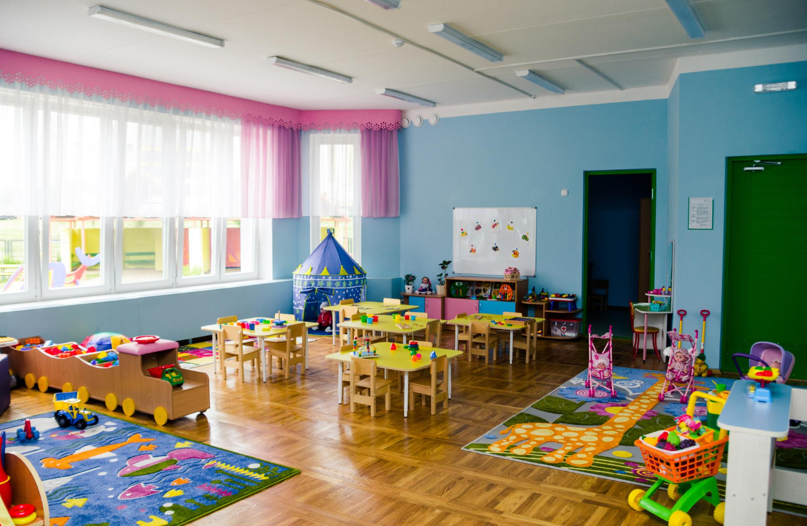
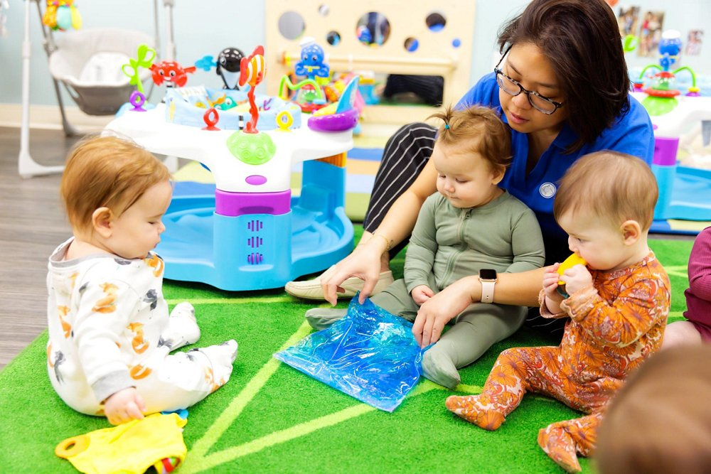
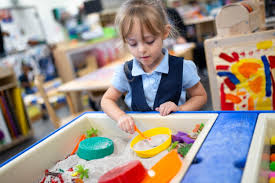

Little Explorers
Ages 0 - 18 months
Max 8 children
A warm, playful place where children grow through care, curiosity, and confidence.
We support children through child-centered play, thoughtful routines, and classrooms designed for every age.
Discover nurturing classes designed for different age groups. Select a class to see the classroom, group size, and teachers.

Ages 0 - 18 months
Max 8 children

Ages 18 - 36 months
Max 12 children

Ages 3 - 5 years
Max 16 children
Gentle care, sensory exploration, and routines that help infants feel secure.
Early learning skills in a space where independence and curiosity are encouraged.
School readiness through literacy, math, science, creativity, and social growth.
Families choose us for caring teachers, warm classrooms, and programs that balance structure with play. Children are supported as whole people: socially, emotionally, creatively, and academically.